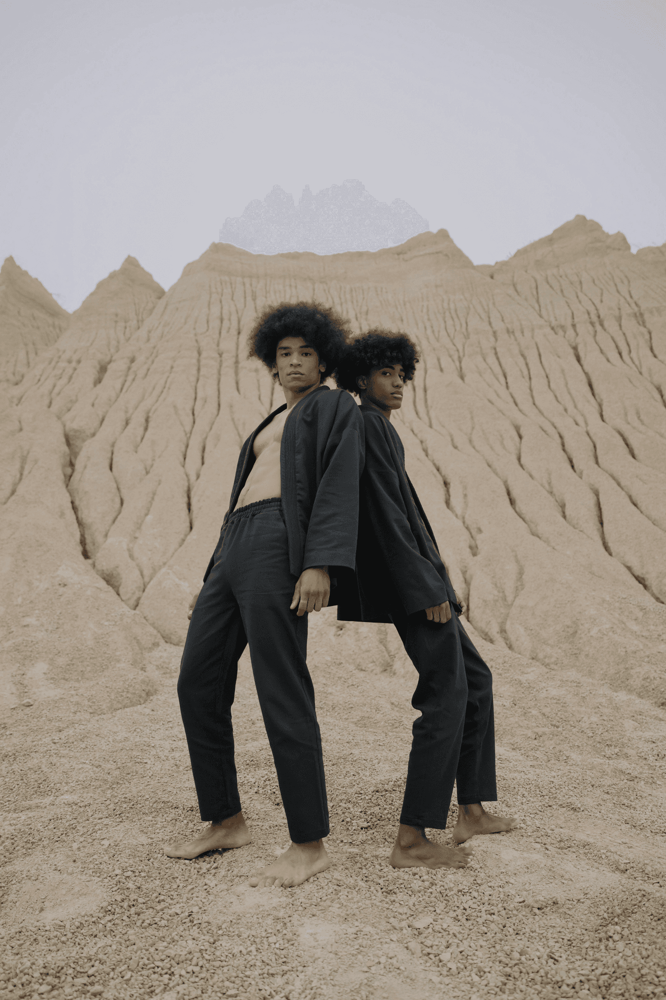
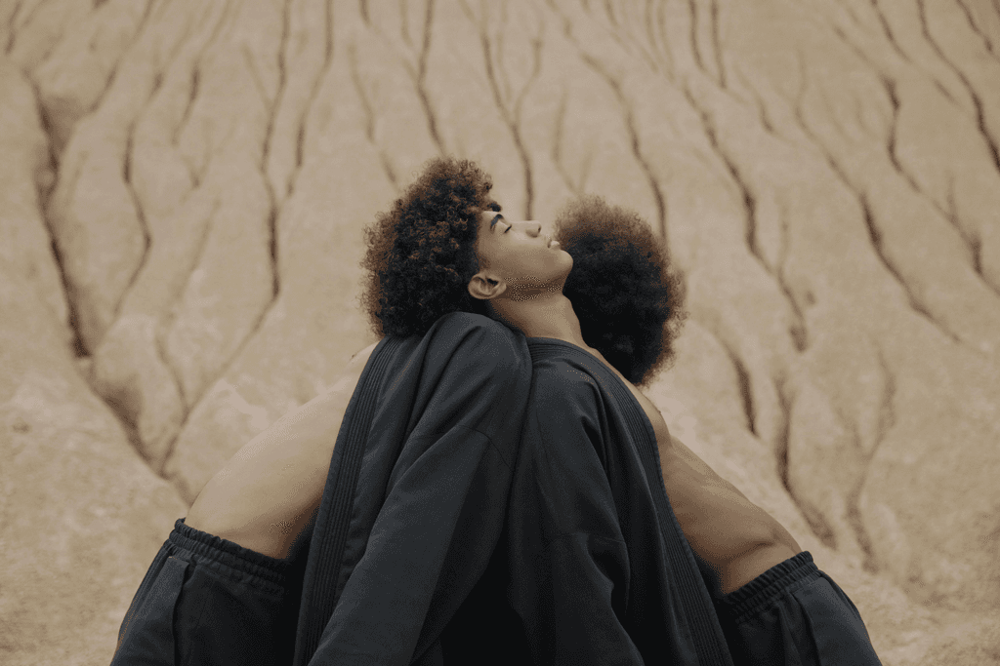
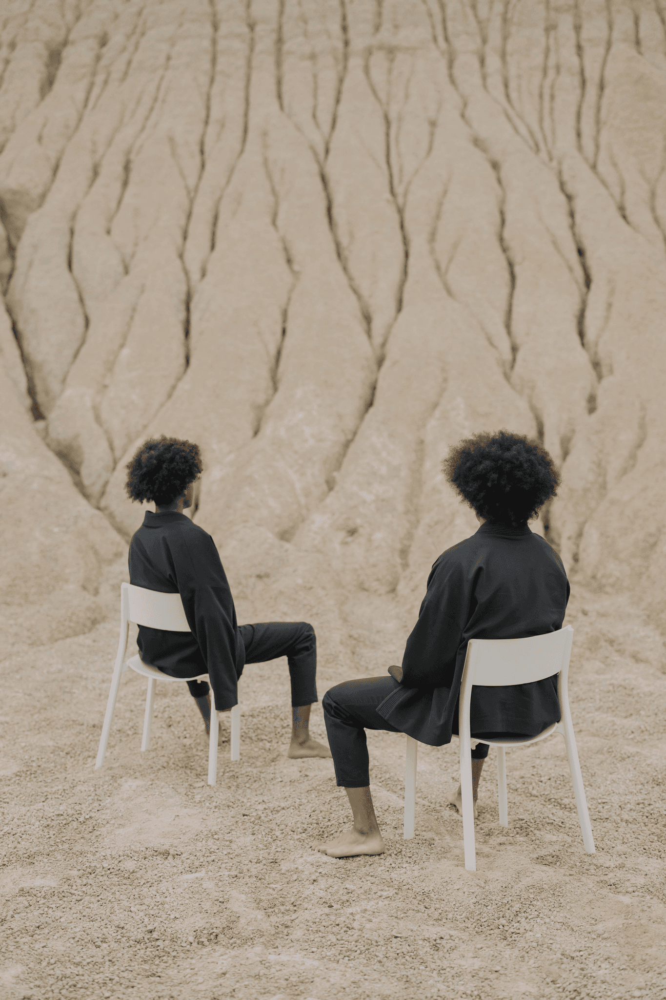

Les Silences Miroirs
In this mineral desert, every pose becomes a quiet question. Two figures, nearly symmetrical, search for each other without meeting. This series explores the idea of inner mirroring, voiceless echoes, and shared solitude—a visual meditation on duality and the resonance of stillness.




Next project
 Révolte douce
Révolte douce